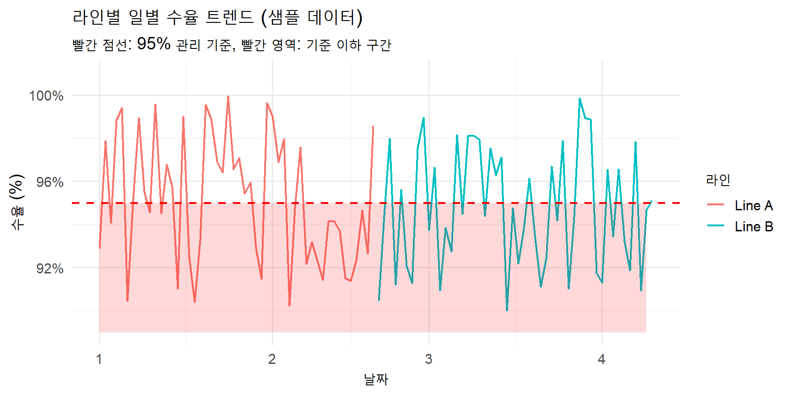
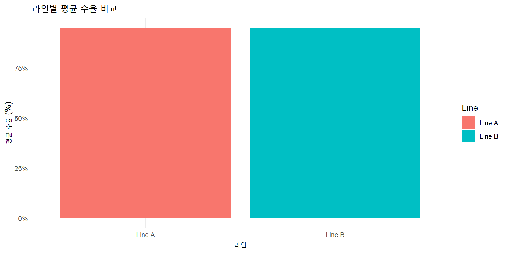

| Function | Description |
|---|---|
| fluidPage | Creates a fluid page |
| sidebarLayout | Layout with sidebar |
| mainPanel | Main panel for output |
| actionButton | Button for actions |
수율 트렌드를 한눈에 — R Shiny & shinyapps.io
2026-04-06
“R은 통계학자의 언어. Shiny는 R로 웹앱을 만드는 마법.”
Shiny는 이 세 가지 요소로 웹앱을 구성합니다.
shinydashboard는 웹 대시보드를 쉽게 구성할 수 있습니다.
CSV 파일을 업로드하여 자동으로 시각화합니다.
1. CSV 업로드 - 파일 선택
2. 데이터 처리 - 날짜 범위 선택
3. 시각화 - 라인 필터링 - 수율 95% 미만 빨간 하이라이트

| Function | Description |
|---|---|
| fluidPage | Creates a fluid page |
| sidebarLayout | Layout with sidebar |
| mainPanel | Main panel for output |
| actionButton | Button for actions |
Shiny 앱의 완성된 모습입니다.
팁
배포 전 앱의 모든 기능을 로컬에서 테스트하세요.
주의
API 키와 같은 민감한 정보를 포함하지 않도록 주의하세요.

Shiny를 활용한 데이터 중심의 웹앱 제작 가능성을 탐구했습니다. 다음 강의에서 더 발전된 기능을 다뤄보겠습니다.
렛유인 KDC | AI 바이브 코딩 실전 | 6강